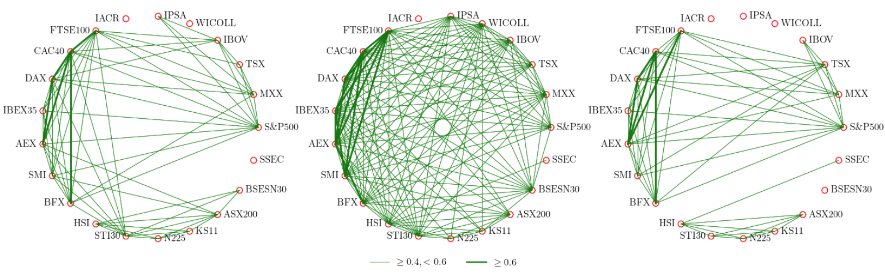

网络的相关性图绘制#
Jul 18, 2024
环形图（Circular graphs）是一种网络图，其中节点在视觉上排列成圆形布局。 在复杂网络学科中，经常会使用环形图表示网络中节点的相关性。

图1 全球股票市场的指数之间在三个时刻（危机前、中、后）的关联性。
如何绘制环形图，在python中可以使用networkx等工具绘制。
但是有时候，为了更灵活的掌控绘图结果，更好的适配数据，最好还是自己来编程绘图。下面是使用matplotlib来绘图绘制网络的相关性图：
import matplotlib.pyplot as plt
import numpy as np
import pandas as pd
import igraph as ig
import numpy as np
import matplotlib.pyplot as plt
import scienceplots
plt.style.use('science')
# plt.rcParams.update({
# "text.usetex": True,
# "font.family": "Helvetica",
# "font.size":10
# })
import matplotlib
matplotlib.__version__
'3.7.1'
def sin(degree):
# degree=30, return 1/2
# degree=90, return 1
return np.sin(degree/90*0.5*np.pi)
def circle(center, radius, vertex):
x, y = center
theta = np.linspace(0, 2*np.pi, vertex+1)
a = radius*np.cos(theta)+x
b = radius*np.sin(theta)+y
return a, b
class NetworkPlot():
def __init__(self, ncols=1):
self.figure, self.axes = plt.subplots(nrows=1,ncols=ncols, figsize=(18,6))
def plot_network(self, adj_matrix, axes, config, title=None, legend_label=None):
## 参数===========================
# plot
figsize = config['plot']['figsize']
# circle
circle_radius = config['circle']['circle_radius']
circle_center = config['circle']['circle_center']
angle = config['circle']['angle']
## 绘图===========================
# plot big circle
vertex_x, vertex_y = circle(center=config['circle']['circle_center'],
radius=config['circle']['circle_radius'],
vertex=adj_matrix.shape[0])
# plot vertices circle
for i in range(adj_matrix.shape[0]):
x,y= circle(center=(vertex_x[i], vertex_y[i]),
radius=config['vertex']['vertex_radius'],
vertex=10)
axes.plot(x, y, color=config['vertex']['vertex_color'])
# add vertex_labels
for i, label in enumerate(adj_matrix.index):
if vertex_x[i]>0:
props = {'ha': 'left', 'va': 'center'}
else:
props = {'ha': 'right', 'va': 'center'}
axes.text(vertex_x[i]+2.*(vertex_x[i]/abs(vertex_x[i]))*config['vertex']['vertex_radius'],
vertex_y[i],
'%s' %label,
props,
fontsize=config['vertex']['vertex_label_fontsize'],
rotation=config['vertex']['vertex_label_angle'],
rotation_mode='anchor')
# add edges
for i, x in enumerate(adj_matrix.index):
for j, y in enumerate(adj_matrix.columns):
if adj_matrix.loc[x, y]==1:
l1, =axes.plot([vertex_x[i], vertex_x[j]],[vertex_y[i], vertex_y[j]],
color=config['edge']['edge_color'],
linewidth= 0.5, #adj_matrix.loc[x, y],
linestyle='-', #config['edge']['edge_style'],
alpha=0.8)
elif adj_matrix.loc[x, y]==2:
l2, =axes.plot([vertex_x[i], vertex_x[j]],[vertex_y[i], vertex_y[j]],
color=config['edge']['edge_color'],
linewidth= 2, #adj_matrix.loc[x, y],
linestyle='-', #config['edge']['edge_style'],
alpha=0.8)
# render figure
#axes.set_aspect(1)
# axis
axes.set_xticks([-10, 10])
axes.set_yticks([-12, 10])
axes.axis('off')
#if title is not None:
# axes.set_title()
if legend_label is not None:
axes.legend(loc='lower center',
ncol=2,
handles=[l1, l2],
labels=legend_label,
fontsize=12,
edgecolor='black',
shadow=False,
frameon=False)
def savefig(self, file_name):
self.figure.savefig(file_name, dpi=300)
config = {'plot': {
'figsize':(12,12),
},
'circle':{
'circle_radius':9,
'circle_center': (0, 0),
'angle': 360},
'vertex':{
'vertex_radius': 0.25,
'vertex_color': 'red',
'vertex_label_angle': 0,
'vertex_label_fontsize': 12},
'edge':{
'edge_color': 'green',
'edge_style': '-', #'-', '--', '-.', ':'
'edge_width': 0.1}
}
# adj_matrix
import pandas as pd
list_df = pd.read_excel('datasets/指数数据表.xlsx', dtype={'指数编码':np.str_}, index_col='指数编码')
#list_df = list_df[list_df['select'] == 'v']
l = []
for i in list_df.index.astype(np.str_):
if i == 'S&P500':
i = 'S\&P500'
l.append(i)
list_df.index = l
nwp = NetworkPlot(3)
date1 = '2007-06-29'
date2 = '2009-06-25'
date3 = '2011-06-29'
for i, date in enumerate([date1, date2, date3]):
adj_matrix = pd.read_csv('output/21nodes_200day_p4_q2/adjacent_matrix/%s.csv' %date, index_col=0)
adj_matrix = adj_matrix.loc[list_df['指数名称']]
adj_matrix = adj_matrix.loc[:, list_df['指数名称']]
#adj_matrix.index = ['%s(%s)' %(list_df.index[i], list_df['国家全称'][i]) for i in range(list_df.shape[0])]
adj_matrix.index = ['%s' %(list_df.index[i]) for i in range(list_df.shape[0])]
adj_matrix[adj_matrix<0.35]=0
adj_matrix[adj_matrix>=0.6]=2
adj_matrix[(adj_matrix>=0.35) * (adj_matrix<0.6)]=1
if i==1:
legend_label=[r'$\geq 0.4, < 0.6$', r"$\geq 0.6$"]
else:
legend_label=None
nwp.plot_network(adj_matrix, axes=nwp.axes[i], config=config, title=date, legend_label=legend_label)
nwp.savefig('images/network_2006_2012.pdf')
{kind=link}